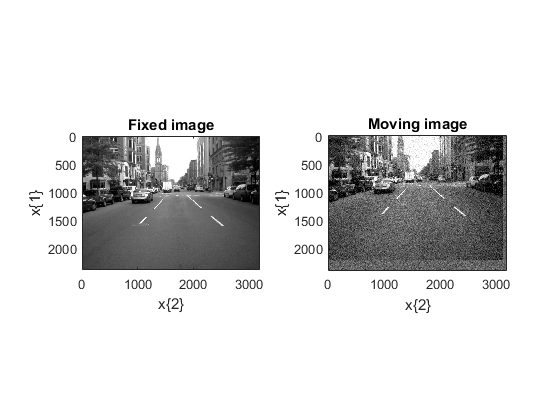

elxExampleStreet
This is the first example
Contents
- Get default toolbox configurtion
- Test elastix version
- Read the street color image and convert it to a gray image
- Define the fixed image
- Define the moving image
- Plot the fixed and moving images
- Choose the elastix parameters
- Remove useless default configuration fields
- Run Elastix
- The rigid transform found by Elastix
- Plot the registerd moving image and the metric
- log structure
- Apply the transformation to a set of points
- License
Get default toolbox configurtion
myElxConf = elxDefaultConfiguration();
Feel free to adjust the settings in
- elxDefaultConfiguration which is the system wide default configuration file
- elxUserDefaultConfiguraiont which is the user default configuration file (If this last function exists and is in your path, it is called by elxDefaultConfiguration).
In those files, you may adjust:
- StrConf.InputDirectory: directory where all elastix inputs are transparently written
- StrConf.OutputDirectory: directory where all elastix outputs are transparently read
- StrConf.ElastixProgram: the name of elastix program
- StrConf.TransformixProgram: the name of the transformix program
- StrConf.ExampleInputDirectory: directory of the example provided by elastix.
You probably do not need to adjust the other fields which are filenames skeletons.
Test elastix version
[Status, ErrorMessage] = elxTestElastixVersion(myElxConf); if ~Status, error(ErrorMessage); end
Read the street color image and convert it to a gray image
I = imread('street1.jpg');
I = 0.2989*I(:,:,1) + 0.5870*I(:,:,2) + 0.1140*I(:,:,3);
I = single(I);
ISize = size(I);
MaxI = max(I(:));
Define the fixed image
Elastix expects images to be a structure StrDatax structure with two fields Data for the image value, and x for the points coordinates.
FixedImage.Data = I;
FixedImage.x{1} = 5*(0:ISize(1)-1);
FixedImage.x{2} = 5*(0:ISize(2)-1);
MeanFixedImage = mean(FixedImage.Data(:));
Define the moving image
The moving image is the fixed image translated by 5*(-35, -15)=(-175,-75). We also add noise to the moving image.
MovingImage = FixedImage; MovingImage.Data = MeanFixedImage*ones(ISize); MovingImage.Data(1:end-35,1:end-15) = I(36:end, 16:end); MovingImage.Data = MovingImage.Data + 20*randn(ISize);
Plot the fixed and moving images
figure(1); colormap gray subplot(1, 2, 1); imagesc(FixedImage.x{[2 1]}, FixedImage.Data, [0 MaxI]); axis image; title('Fixed image'); xlabel('x\{2\}'); ylabel('x\{1\}'); subplot(1, 2, 2); imagesc(MovingImage.x{[2 1]}, MovingImage.Data, [0 MaxI]); axis image; title('Moving image'); xlabel('x\{2\}'); ylabel('x\{1\}');
Choose the elastix parameters
We choose:
- a rigid transform
- the mean-squares metric
- a quasi-Newton optimiser
myElxParam = elxDefaultParameters('EulerTransform', 2); myElxParam.Optimizer = 'QuasiNewtonLBFGS'; myElxParam.ImageSampler = 'Full'; NumberOfResolutions = 4; myElxParam.Metric = 'AdvancedMeanSquares'; myElxParam.NumberOfResolutions = NumberOfResolutions; myElxParam.BSplineInterpolationOrder = 1; myElxParam.FixedImagePyramid = 'FixedRecursiveImagePyramid'; myElxParam.MovingImagePyramid = 'MovingRecursiveImagePyramid'; myElxParam.DefaultPixelValue = MeanFixedImage;
Remove useless default configuration fields
myElxParam = rmfield(myElxParam, {'SampleRegionSize',...
'NewSamplesEveryIteration', ...
'NumberOfSpatialSamples'});
Run Elastix
[strRegMoving,Transforms,log,success,message] = elxElastix(myElxConf, ... myElxParam, FixedImage, MovingImage); disp(['success : ' num2str(success)]) if ~success disp(sprintf(' elastix message: %s\n',message{:})) return; end
Warning: Escaped character '\m' is not valid. See 'doc sprintf' for supported special characters. Warning: Escaped character '\m' is not valid. See 'doc sprintf' for supported special characters. Warning: Escaped character '\m' is not valid. See 'doc sprintf' for supported special characters. success : 0 elastix message: ERROR: when reading the parameter file: elastix message: elastix message: itk::ExceptionObject (000000DC8DCFF008) elastix message: Location: "unknown" elastix message: File: D:\tk\elastix\exports\tagspublic\elastix_04_8\src\Common\ParameterFileParser\itkParameterFileParser.cxx elastix message: Line: 149 elastix message: Description: itk::ERROR: ParameterFileParser(00000258C552E390): ERROR: the file \home.ansatt.ntnu.no does not exist. elastix message: elastix message: elastix message: ERROR: Something went wrong during initialization of the configuration object. elastix message: ERROR: elastix message: The configuration object has not been initialized. elastix message: Errors occurred!
The rigid transform found by Elastix
- The first parameter is the rotation angle
- The second and third parameters are translations
Transforms{1}.TransformParameters
Transforms is a cell because all the available transforms have not the same fields. And when you specified a composed transform, elastix return several transforms.
Plot the registerd moving image and the metric
figure(2); colormap gray subplot(1, 2, 1) imagesc(strRegMoving.x{[2 1]}, strRegMoving.Data); axis image; title('Registered moving image'); xlabel('x\{2\}'); ylabel('x\{1\}'); subplot(1, 2, 2); imagesc(strRegMoving.x{[2 1]}, strRegMoving.Data - FixedImage.Data) axis image title('Difference between the registered image and the fixed image'); xlabel('x\{2\}'); ylabel('x\{1\}');
With a quasi-Newton optimiser, the number of iterations is not fixed and varies from one resolution to another.
NbIter = ones([1 NumberOfResolutions]); for cpt = 1:NumberOfResolutions NbIter(cpt) = numel(log.ParameterFile(1).Resolution(cpt).Metric); end Legend = cell(1, NumberOfResolutions); Metric = NaN(max(NbIter), NumberOfResolutions); for cpt = 1:NumberOfResolutions Legend{cpt} = sprintf('Resolution %i', cpt-1); Metric(1:NbIter(cpt), cpt) = log.ParameterFile(1).Resolution(cpt).Metric; end
Do the real plotting
figure(3);
plot(Metric);
legend(Legend{:});
xlabel('Iteration #');
ylabel('Metric');
log structure
We explore the log fields.
log.Command: The system command ran by elxElastix. Useful for debugging.
log.Command
log.ElastixVersion
log.ElapsedTimeInSec
log.ParameterFile(1) is a rather complex structure built by parsing in the logfile the part devoted to the first elastix ParameterFile. Here we seek for one rigid transform so there is only one ParameterFile.
We find the list of parameters we specified.
log.ParameterFile(1).Parameters
Default parameters are those that elastix have chosen for you. In the logfile they appear as warning messages.
Take care Elastix may choese a parameter because the name of the field is incorrect. So it is worth exploring this parameter.
log.ParameterFile(1).DefaultParameters
Unprocessed warnings: They are informative messages about your configuraiton.
log.ParameterFile(1).UnprocessedWarnings{:}
log.ParameterFile(1).NbResolutions
For each resolution we get info
log.ParameterFile(1).Resolution(3)
log.ParameterFile(1).Resolution(3).DefaultParameters
Apply the transformation to a set of points
We define four points from their indices. Here the convention is the one of elastix not Matlab so one point have indices (0, 0). We could also have defined them with their coordinates.
PointSet.Indices = [0 0; 1 1; 10 1; 1 10]; [Data, Log, Success, Message]=elxTransformix(myElxConf, Transforms, ... 'Deformation', PointSet); Data
Data.OutputPointSet.Points
License
Copyright (C) CNRS and Riverside Research Contributors: Alain CORON, Jonathan MAMOU (2010)
alain.coron@upmc.fr, JMamou@riversideresearch.org
This software is a computer program whose purpose is to effectively register images within Matlab (http://www.mathworks.com) with elastix (http://elastix.isi.uu.nl/), an open-source image-registration software.
This software was supported in part by NIH Grant CA100183, the Riverside Research Biomedical Engineering Research Fund, and CNRS.
This software is governed by the CeCILL-B license under French law and abiding by the rules of distribution of free software. You can use, modify and/ or redistribute the software under the terms of the CeCILL-B license as circulated by CEA, CNRS and INRIA at the following URL "http://www.cecill.info".
As a counterpart to the access to the source code and rights to copy, modify and redistribute granted by the license, users are provided only with a limited warranty and the software's author, the holder of the economic rights, and the successive licensors have only limited liability.
In this respect, the user's attention is drawn to the risks associated with loading, using, modifying and/or developing or reproducing the software by the user in light of its specific status of free software, that may mean that it is complicated to manipulate, and that also therefore means that it is reserved for developers and experienced professionals having in-depth computer knowledge. Users are therefore encouraged to load and test the software's suitability as regards their requirements in conditions enabling the security of their systems and/or data to be ensured and, more generally, to use and operate it in the same conditions as regards security.
The fact that you are presently reading this means that you have had knowledge of the CeCILL-B license and that you accept its terms.
$Id: elxExampleStreet.m 3 2012-05-25 19:37:07Z coron $